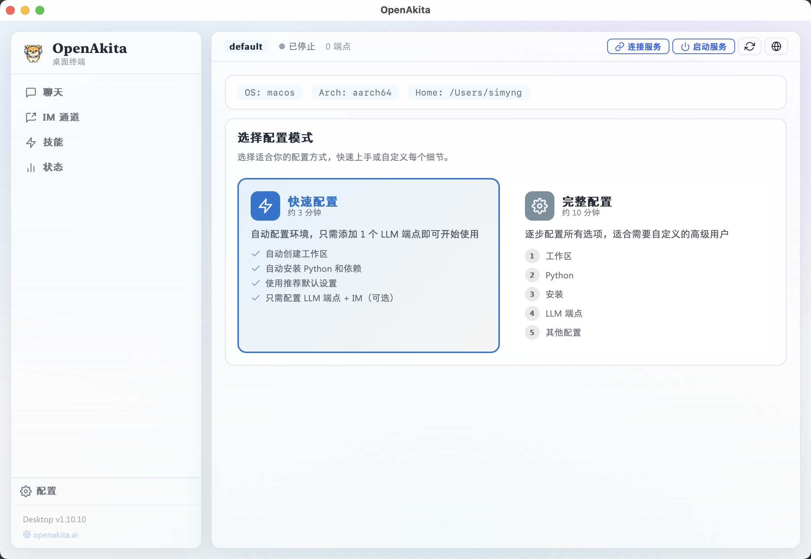
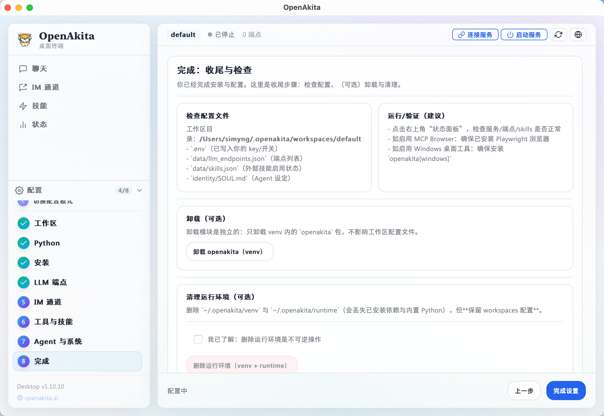
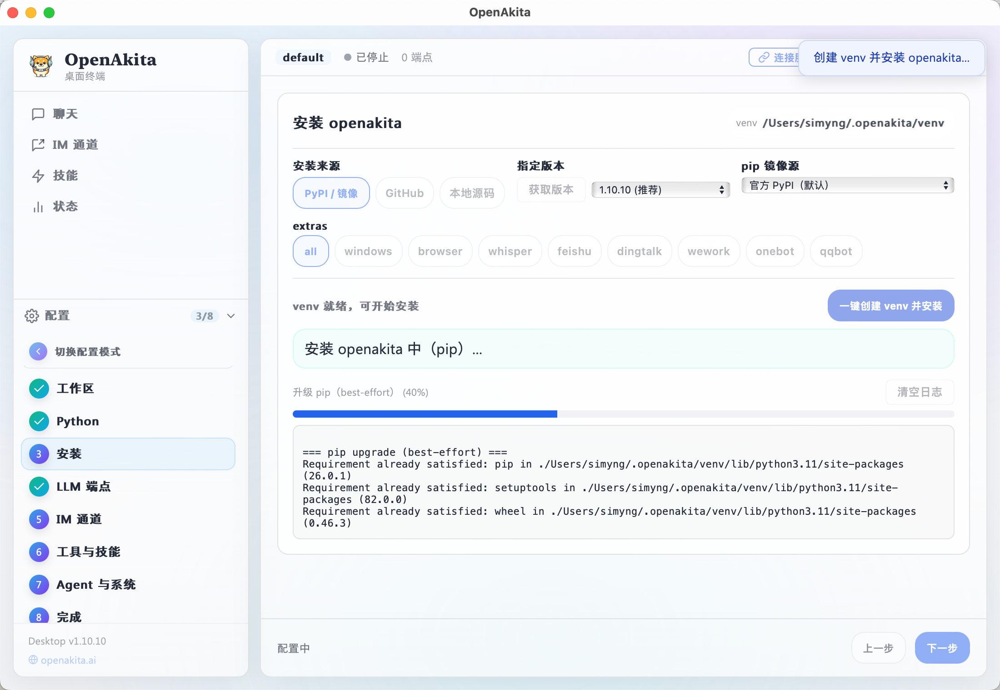

1
完成安装
根据角色选择 Desktop / PyPI / 源码方式。
本教程按可落地标准整理：安装、初始化、验证、排障、上线检查，一步到位。
推荐路径：Desktop 快速启动，CLI 稳定部署，源码模式用于团队二次开发。
根据角色选择 Desktop / PyPI / 源码方式。
运行 `openakita init` 生成 `.env` 与必要目录。
确认对话、任务执行与日志输出全部正常。
| 项目 | 最低要求 | 推荐 |
|---|---|---|
| Python | 3.11+ | 3.11+ 稳定版本 |
| 内存 | 2 GB | 4 GB+ |
| 磁盘 | 5 GB | 20 GB+ |
| 系统 | Windows / Linux / macOS | 新版本系统 |
需访问 LLM API 端点；若网络受限，提前准备代理配置。
安装目录需有读写权限，服务模式建议使用独立运行账户。
以下步骤依据桌面端配置向导整理，覆盖快速配置与完整配置两种模式。首次启动 OpenAkita Desktop 后会自动进入该向导。
开始前请准备：可联网环境、至少 1 个可用 LLM API Key、2 GB 以上可用磁盘空间。
| 项目 | 建议值 | 说明 |
|---|---|---|
| 操作系统 | Windows 10/11、macOS 12+、Linux x86_64 | 桌面安装包按系统分别下载 |
| 网络 | 可访问 Python 依赖源和 LLM 服务 | 首次配置会下载运行环境与依赖 |
| LLM API | 至少 1 个可用端点 | 快速配置必须先添加端点才能继续 |

| 模式 | 耗时 | 适合场景 | 特点 |
|---|---|---|---|
| 快速配置 | 约 3 分钟 | 首次体验、默认部署 | 自动完成环境搭建，只需填写关键项 |
| 完整配置 | 约 10 分钟 | 生产定制、企业部署 | 逐项配置工作区、Python、端点、工具与系统参数 |

快速配置会自动创建默认工作区、安装内置 Python、创建虚拟环境并安装依赖。你只需补全 LLM 端点，IM 通道可选。
点击“+ 添加端点”，填写服务商、Base URL、API Key、模型、能力标签。
按需填写 Telegram / 飞书 / 企业微信 / 钉钉 / QQ 官方机器人 / OneBot 参数，不配也可先使用桌面对话。
未添加任何 LLM 端点时按钮会禁用，先补全端点后再继续。
向导会按顺序安装运行环境并写入默认配置，可在进度页查看日志。
在完成页查看工作区、端点和 IM 摘要，点击“启动服务”进入状态面板。


openakita[all]、写入默认配置。完整配置适合生产场景，适合需要自定义运行环境、安装源、工具能力和 Agent 行为策略的团队。
新建或切换工作区，隔离 .env、data/llm_endpoints.json 和角色配置。
可选内置 Python（推荐）或系统 Python 3.11+，检测通过后再进入安装步骤。
支持 PyPI / GitHub / 本地三种来源，可选择镜像源与 extras 组件。
支持多端点、优先级和故障切换；主端点建议配置 2 个不同服务商。
按需启用 Telegram、飞书、企业微信、钉钉、QQ 官方机器人与 OneBot，全部为可选项。
配置 MCP 工具、桌面自动化、语音与代理参数，并管理内置/外部 Skills。
设置角色人格、日志、记忆、主动消息与调度器参数。
检查配置文件、启动服务并进入状态面板，必要时可执行清理或重装。
| 安装来源 | 说明 | 推荐场景 |
|---|---|---|
| PyPI | 稳定版本，默认来源 | 生产环境、常规部署 |
| GitHub | 拉取最新仓库代码 | 需要新特性或测试分支 |
| 本地目录 | 从本地源码安装 | 本地开发和调试 |



向导会把配置写入工作区目录。建议通过桌面端修改配置，避免手工编辑导致格式错误。
# 环境变量文件
~/.openakita/workspaces/{workspace_id}/.env
# LLM 端点列表
~/.openakita/workspaces/{workspace_id}/data/llm_endpoints.json
# 角色灵魂文件
~/.openakita/workspaces/{workspace_id}/identity/SOUL.md.env 或 llm_endpoints.json 后，执行“应用并重启”或重启服务。适合研发环境和自动化部署脚本，推荐作为 CI/CD 的基础安装路径。
# 1) 创建虚拟环境
python -m venv venv
# 2) 激活环境（Linux/macOS）
source venv/bin/activate
# 3) 激活环境（Windows PowerShell）
# .\\venv\\Scripts\\activate
# 4) 安装 openakita 与常用扩展
pip install openakita[all]
# 5) 初始化配置文件
openakita init
# 6) 启动交互模式
openakita按需安装可选包：`openakita[feishu]`、`openakita[whisper]`、`openakita[browser]` 等。

适合研发团队进行二次开发、定制模型策略和平台适配器扩展。
# 1) 拉取源码
git clone https://github.com/openakita/openakita.git
cd openakita
# 2) 创建并激活虚拟环境
python -m venv venv
source venv/bin/activate
# 3) 升级 pip 并安装开发依赖
pip install --upgrade pip
pip install -e ".[all,dev]"
# 4) 准备配置模板
cp examples/.env.example .env
cp data/llm_endpoints.json.example data/llm_endpoints.json
# 5) 初始化运行环境
openakita init# 交互模式
openakita
# 服务模式（仅 IM）
openakita serve
# 单次任务测试
openakita run "创建一个带测试的 Python 计算器"A：检查 `.env` 路径与变量名，确认与 `api_key_env` 一致。
A：确认虚拟环境已激活，或使用 `python -m openakita` 方式启动。
A：配置 `ALL_PROXY` 或改用可访问的 `base_url` 代理端点。
示例：将 `<iframe src="..."></iframe>` 直接替换到上方容器中。